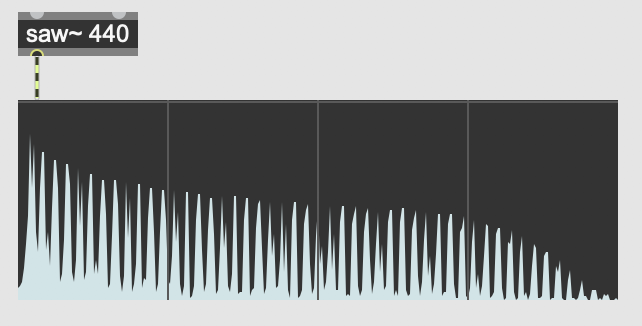
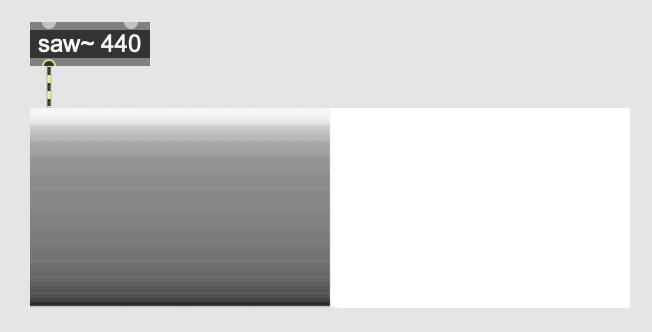
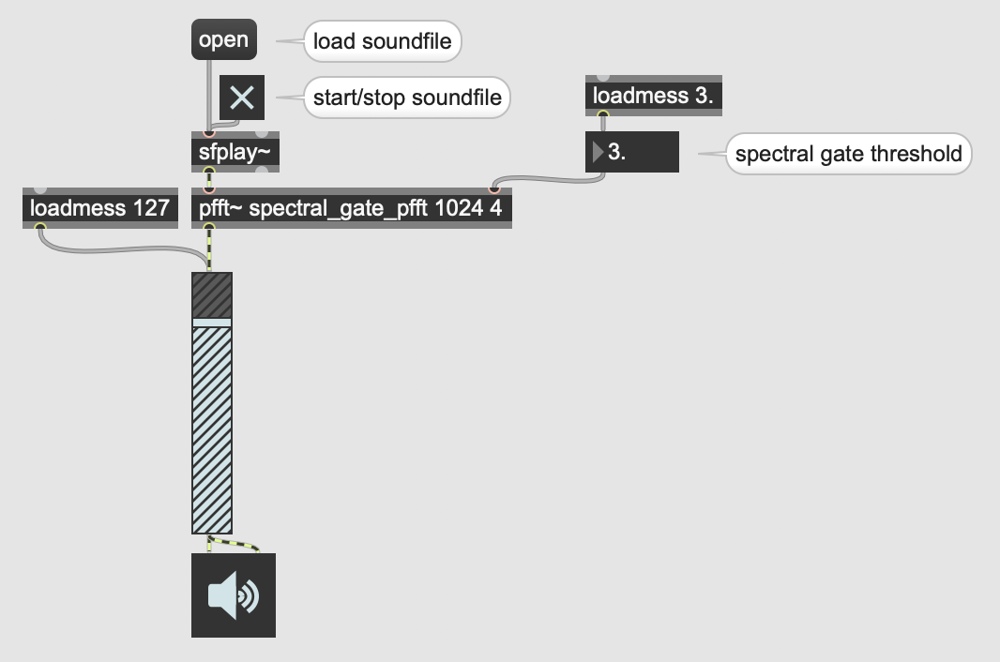
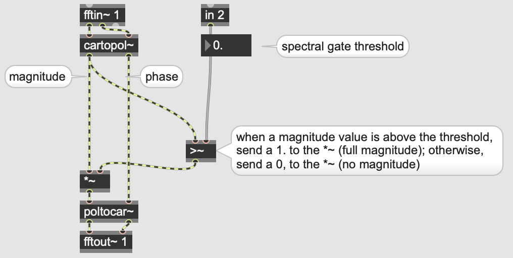

How do we get from the time domain to the frequency domain in Max? There are two tutorials, Using the FFT and Signal Processing with pfft~, that describe this process in great detail. Read at least the first of these—Using the FFT—which provides a conceptual overview. However, the first tutorial focuses mostly on the fft~ object, which is simpler but less useful in practice. The second tutorial is more technical, showing how to do spectral processing with the pfft~ object in Max/MSP; try out the processes in the tutorial, even if you don't understand every bit of it.
What follows here are some mini-tutorials, in an attempt to further simplify some of the material in the more wide-ranging tutorials linked above.
Quick vocab review: when discussing timbre, and the relative strength of the sine tones that compose a given pitch, we can refer to the totality of a sound's frequency-to-magnitude mappings as its "spectrum". Put more simply, do you remember that visualization of the frequency domain, with frequency on the x axis and magnitude on the y axis? That's called a "spectrum". In Max, we can visualize a spectrum of a sound with the object spectroscope~.

The spectroscope~ object, in "spectrogram" mode.
The spectroscope~ object has two modes: spectrogram and sonogram. The spectrogram is what we've been discussing: a snapshot of magnitude over frequency. The sonogram is actually a map of frequency over time, with high frequencies at the top of the y axis and low frequencies at the bottom of the y axis. Dark points represent louder frequencies, while lighter points represent softer ones.

The spectroscope~ object, in "sonogram" mode.
To switch between spectrogram and sonogram modes, change the "Display Mode" attribute in the inspector window.
The pfft~ object has a number of unusual quirks. The first is that its first argument is the name of a Max patch. That's right: for pfft~ to work, you need to create completely separate, secondary Max patch that contains all of the frequency-domain processing you want to do. A common convention is to postfix the filename of this secondary Max patch with "_pfft" so that other programmers understand what the patch is doing. For example, you might have a patch called "spectral_gate.maxpat", which contains the object pfft~ spectral_gate_pfft.maxpat. So long as "spectral_gate_pfft.maxpat" is in same folder or elsewhere on the search path, the pfft~ will function correctly.
The second argument of pfft~ is the FFT frame size. Review the previous lession if you're unsure what this means. To review, this must be a power of 2, and the most common values are 1024, 2048, and 4096.
The third argument of pfft~ is the overlap factor. One way to counteract the time-resolution/frequency-resolution tradeoff described in the previous lession is to have FFT frames overlap with one another. Usually this overlap factor is fairly small, somewhere around 4.
That's it for pfft~ arguments! Now let's move on now to the interior Max patch—the one that actually does the pfft~ processing.
To change the number of inlets and outlets of pfft~, create fftin~ and fftout~ objects. These take one required argument: the (1-indexed) order of inlet/outlet the object corresponds to on the outer-level. So, if you want to create a pfft~ with two inlets and one outlet, create the objects fftin~ 1, fftin~ 2, and fftout~ 1.
If you look at the three outlets of an fftin~, you'll see the leftmost is labeled "Real Input", the middle is labeled "Imaginary Input", and the rightmost is labeled "FFT Bin Index". For the first two—real and imaginary—these correspond to what are called the "cosine coefficient" and "sine coefficient" of each frequency bin of the FFT. Unless you really know what you're doing, these coefficients will be of little use to you. To get the magnitude of each frequency bin—what you're probably really looking for—you have to run both the real and imaginary inputs through a cartopol~ object. Then, the left outlet of cartopol~ will correspond to magnitude, while the right outlet of cartopol~ will correspond to phase.
When done playing around with magnitude and phase values, don't forgot to run those values back through a poltocar~ before passing them to fftout~!
Finally, the "FFT Bin Index" outlet of fftin~ tells you which bin the corresponding cosine and sine coefficients belong to. One quirk of this is that this bin index only goes up to half the FFT size. So, if your FFT size is 4096, the FFT bin index will top out at 2047. This is because the frequencies from bins 2048 through 4095 will be above the Nyquist frequency, and so are of no use for us. To review what the Nyquist frequency is, reread Prof. Dobrian's Digital Audio article.
Let's compose a cool audio effect that's only possible by translating to and from the frequency domain: a "spectral gate". Whereas a "noise gate" takes an input signal, and only lets amplitude values pass through that are above a given threshold, a spectral gate takes an input signal, and only lets frequency bins pass through whose magnitudes are above a given threshold. You can download this example below.

Outer-level spectral gate patch

View of spectral_gate_pfft.maxpat
There are two Max Cookbook examples concerning the FFT: